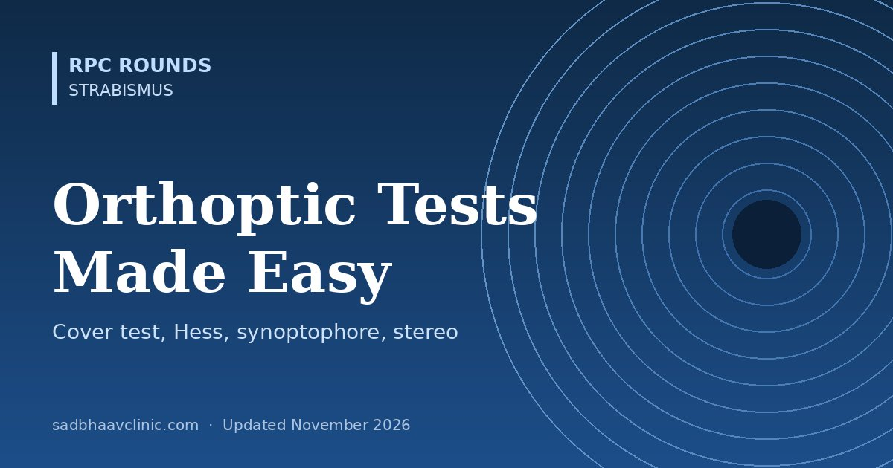

Last updated: November 2026
Orthoptic tests answer three questions about a squint: how big is the deviation, how well do the two eyes work together, and is the problem paralytic or restrictive. Most of them are quick to do and easy to interpret once you know what the patient is looking at and which eye is behind which filter. This page goes through each test in the order you would use it in clinic, with how to read the result.
| Test | How | What it tells you |
|---|---|---|
| Cover–uncover test | Cover one eye and watch the other; then uncover and watch the covered eye | Cover: movement of the uncovered eye = manifest squint (tropia). Uncover: recovery movement of the covered eye with no tropia = latent squint (phoria) |
| Alternate cover test | Move the cover from eye to eye without letting both eyes see | Total deviation (tropia plus phoria). It breaks fusion, so it shows the maximum deviation |
| Prism cover test (PCT) | Alternate cover with a prism bar in front of one eye until movement stops | Measures the total deviation in prism dioptres; do it at 6 m and 33 cm, and in gaze positions for incomitance |
| Simultaneous prism cover test | Prism in front of the deviating eye while the fixing eye is covered at the same moment | Measures only the manifest part (tropia), useful in microtropia and monofixation |
Do the cover test with an accommodative target (letters or a picture), with and without glasses, and at both distances. Base-out prisms neutralise an esodeviation and base-in prisms an exodeviation: the apex of the prism points in the direction of the deviation.
| Test | How it works | Reading |
|---|---|---|
| Maddox rod (distance) | Red parallel cylinders over one eye turn a spot light into a line; the eyes cannot fuse the line with the spot | Horizontal phoria: rods horizontal give a vertical line. Line to the side of the rod eye = eso (uncrossed); line to the other side = exo (crossed). Measure with prisms until the line runs through the light |
| Maddox wing (near, 33 cm) | The septum lets the right eye see an arrow and the left eye a scale | Horizontal (white arrow) and vertical (red arrow) phoria in prism dioptres, and cyclophoria by aligning the arrow with the scale |
| Fusional reserves (prism bar or rotary prisms) | Increase prism in one direction until blur, break (diplopia) and recovery | Base-out = convergence (positive) reserve; base-in = divergence (negative); base-up/down = vertical |
| Near point of convergence (RAF rule) | Bring a target towards the nose until one eye drifts out or the patient sees double | Normal break about 6–10 cm or closer; recovery within a few cm of the break |
Normal fusional amplitudes vary with the method and the target. As a guide: at distance, base-out break about 15–20Δ and base-in 6–8Δ; at near, base-out 25–35Δ and base-in 12–15Δ; vertical reserves only 2–4Δ, which is why a small vertical deviation causes symptoms. Sheard criterion: the opposing reserve should be at least twice the phoria. See convergence insufficiency and excess.
The patient wears red-green goggles: by convention red over the right eye, green over the left. The torch shows one red, two green and one white light. The red lens lets the right eye see only red, the green lens lets the left eye see only green, and the white light is seen by whichever eye is dominant (or by both, in fusion).
| Patient sees | Meaning (red over right eye) |
|---|---|
| 4 lights | Fusion (or harmonious anomalous retinal correspondence if a manifest squint is present) |
| 2 red lights | Left eye suppressed |
| 3 green lights | Right eye suppressed |
| Alternating 2 red and 3 green | Alternating suppression |
| 5 lights, red on the right | Uncrossed diplopia: esodeviation |
| 5 lights, red on the left | Crossed diplopia: exodeviation |
At distance (6 m) the dots subtend a small central area, testing central fusion; at near (33 cm) they fall on a larger, more peripheral area. A patient who fuses at near but suppresses at distance has peripheral fusion with a central suppression scotoma, typical of monofixation syndrome (microtropia).
Plano lenses with fine striations at 45° and 135° turn a spot light into a streak for each eye. Because the glasses barely disturb normal viewing, it is the most natural test of correspondence. A cross with the light at its centre means fusion (or harmonious ARC with a manifest squint); a missing streak means suppression; a gap in one streak near the light means a small central suppression scotoma.
A 4Δ base-out prism is put in front of one eye. If that eye has a central suppression scotoma (microtropia), the image moves within the scotoma and neither eye moves. If it does not, the eyes shift to refixate. Useful for picking up the deviating eye in monofixation.
| Test | Principle | Range (seconds of arc) | Note |
|---|---|---|---|
| Titmus fly (Stereo Fly) | Polarised vectographs | Fly about 3000″; animals and circles down to 40″ | The fly is gross stereo; circles test fine stereo |
| TNO | Red-green random dot | 480″ to 15″ | No monocular clues; needs red-green glasses |
| Lang I and II | Random dot with cylinder gratings, no glasses | About 1200″ to 200″ | Good for small children: watch the eyes move to the hidden picture |
| Frisby | Real depth: patterns printed on clear plates of different thickness | About 600″ to 15″ (varies with distance) | No glasses; real 3D |
| Randot | Polarised random dot | About 500″ (shapes) to 20″ | Polarised glasses |
Normal adult stereoacuity is about 40–60″ or better. Random-dot tests have no monocular clues, so a pass is good evidence of binocular vision. Reduced stereoacuity with otherwise straight eyes is a clue to anisometropic amblyopia or microtropia.
Two tubes, one for each eye, each with a mirror and a +6.50 D lens so the eyes view slides at optical infinity. The arms can be moved horizontally, vertically and torsionally, and the scale reads the deviation in degrees.
The Hess (red-green) and Lees (two mirrored screens) tests plot the position of each eye in nine gaze directions while the other eye fixes. They separate the eyes by dissociation, so the chart shows each eye's motility, the primary and secondary deviations, and the sequelae of a palsy over time.
Repeating the chart over time shows recovery (fields expanding) and helps decide when to operate, usually after 6–12 months of stability.
Where residents slip
Related: Strabismus Measurement and Surgical Dose Tables: Quick Reference, Approach to Diplopia: Monocular vs Binocular and the Three-Step Test, Esotropia and Exotropia: Types, Tests and Surgery, Convergence Insufficiency and Convergence Excess: Diagnosis, Treatment and Exercises, Third, Fourth & Sixth Nerve Palsies.
📘 Want more exam-ready material? See Most Commons in Ophthalmology on Kindle, or browse all my books.
Looking for an eye specialist in Ahmedabad? Squint treatment at Sadbhaav or book a consultation with Dr. Dhaval Patel.